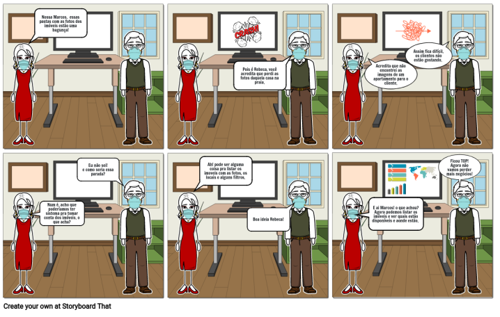
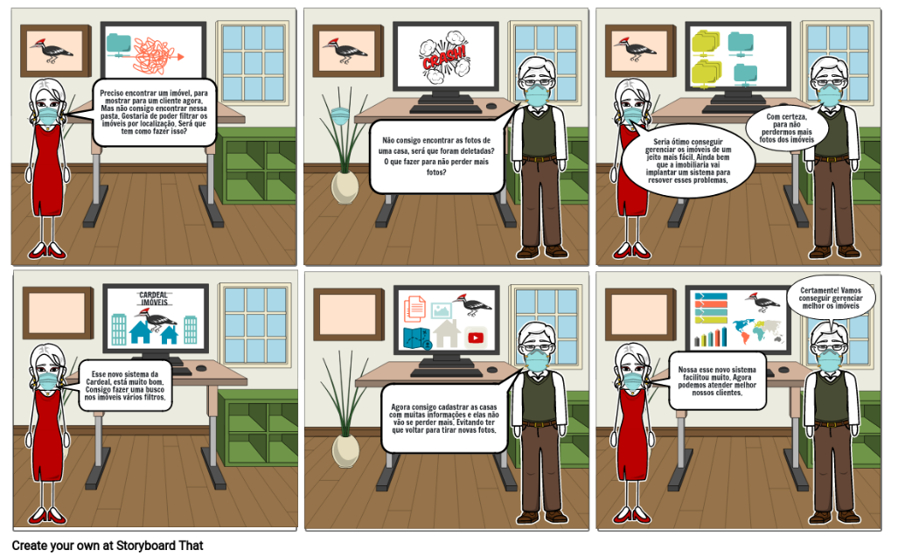

Storyboard
O storyboard é uma técnica de sequência de desenhos ou ilustrações que podem ser utilizadas para contar uma história. É um roteiro desenhado parecido com uma história em quadrinhos. Na engenharia de software pode ser utilizada como apoio para melhorar a documentação do problema, dos requisitos no processo de desenvolvimento, representar o caminho das interações dos usuários com o sistema.
Entre os benefícios podemos destacar que ele apoia o planejamento para a realização do projeto, mostra visualmente as etapas.Metodologia
Na realização do Design Sprint durante a dinâmica, essa técnica foi utilizada para apoiar a elicitação de requisitos criando um Storyboard na visão dos funcionários da imobiliária.
Storyboard Imobiliária

Storyboard Visão Corretor

Referência Bibliográficas
- STORYBOARD. In: WIKIPÉDIA: a enciclopédia livre. Wikipedia, 2021. Disponível em: https://pt.wikipedia.org/wiki/Storyboard. Acessado em: 01/08/2021.
Ferramenta utilizada
Versionamento
| Data | Versão | Descrição | Autor |
|---|---|---|---|
| 02/08/2021 | 1.0 | Criação do Documento | Gustavo Duarte Moreira |